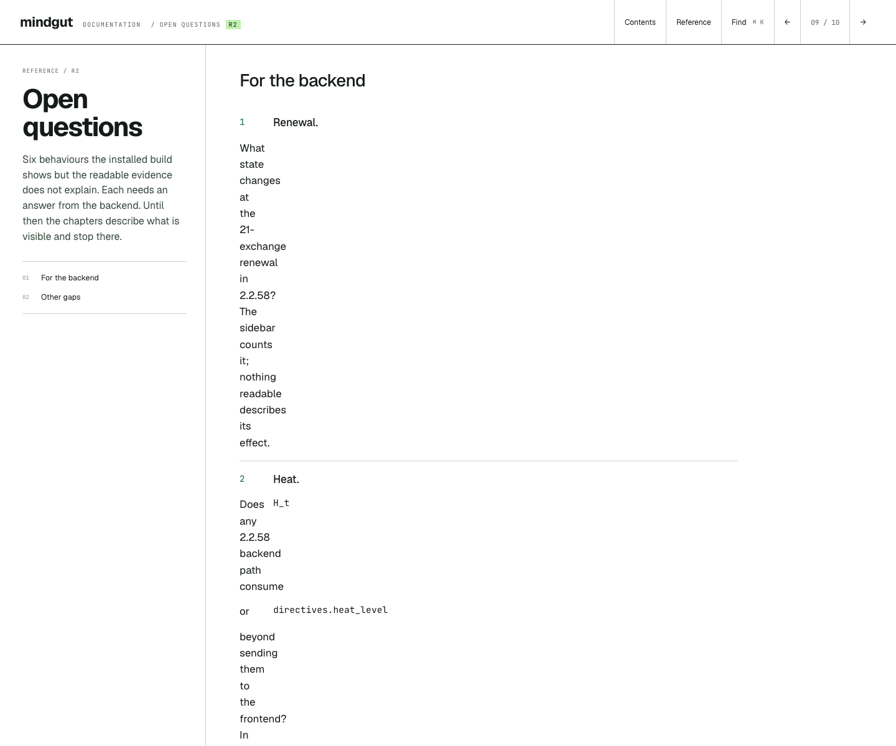
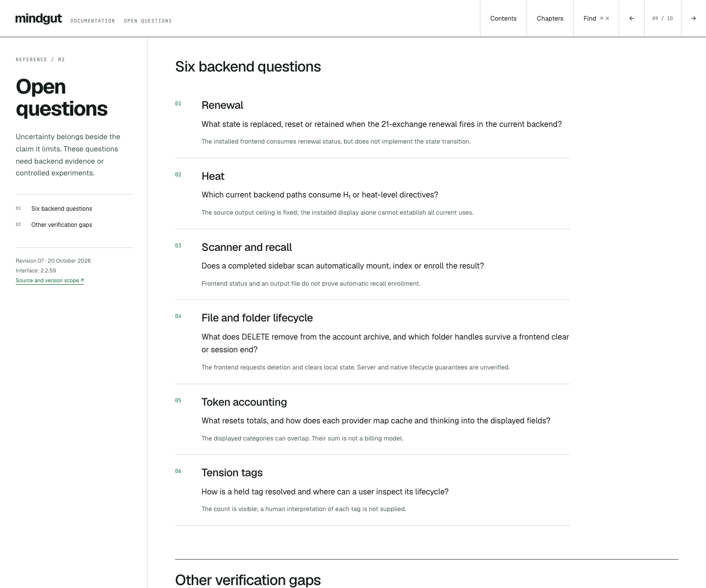

Reviewed the complete V05 document, its source and figures, the running 2.2.59 app, installed frontend files, public backend snapshot cbf4e42, and the installed founding record. The original V05 remains unchanged.
42 findings resolved or explicitly bounded · 11 pages · 55 page/width checks
Open the revised guide ↗ · Browser results · Machine-readable register · Real-capture manifest


| # | Area | Finding | Resolution |
|---|---|---|---|
| 01 | LayoutOpen questions | The list item’s number, bold title and anonymous text were placed into separate grid cells. Paragraphs collapsed into the 40px number column. | Wrap the text in one minmax(0, 1fr) cell and align number, title and paragraph deliberately. |
| 02 | LayoutGetting started / recovery | The same anonymous-grid-item defect affected numbered instructions. | Use a shared structured step component; verify its paragraph widths. |
| 03 | ImagesSidebar | UI fixtures replaced account/model labels with generic values and inserted synthetic conversation/files. They were not running-app captures. | Replace every interface image with real desktop screenshots and declared crops. |
| 04 | ImagesSidebar | A narrow sidebar was enlarged across a much wider detail area, softening the UI and cutting selected bands. | Use separate native-resolution crops, cap panel capture display width and offer enlargement. |
| 05 | ImagesSidebar | The large native select obscured the figure and made the current selection difficult to inspect. | Use eleven named panel buttons with previous/next controls and keyboard support. |
| 06 | ImagesGetting started | The screen image was described as illustrative but could be mistaken for actual session evidence. | Show a real existing session and explicitly distinguish it from a first-run screen. |
| 07 | ImagesTop bar | The full-width bar made the three controls too small to read. | Add a clean real crop of the controls, with no cursor over them. |
| 08 | HierarchyContents | The opening chart required understanding phase measures before explaining the workspace. | Lead with the work, then three real product captures: model, output, record. |
| 09 | AccuracyVersion scope | V05’s 2.2.58 baseline no longer matched the running app, which reports 2.2.59. | Separate installed frontend evidence from public backend snapshot cbf4e42. |
| 10 | AccuracyRecall | The diagram chose complement strands from message-to-corner axes; the source scores field-to-message segments. | Implement the actual 3D segment distance and source scoring. |
| 11 | AccuracyRecall | The opposite group was measured from the message instead of the record’s field point. | Keep the field point fixed for radial opposite scoring. |
| 12 | AccuracyRecall | Displayed IDs were array positions in a phase-only sample, not actual sequence_id values. | Use the 187 installed founding strands and their real identifiers. |
| 13 | AccuracyRecall | The figure bucketed candidates by largest phase component rather than stored coset. | Use stored class buckets and the source’s speech-act filter. |
| 14 | AccuracyRecall | The source position/gravity term and the near-coincident fallback were absent. | Copy those scoring conditions and compare with source fixtures. |
| 15 | AccuracyRecall | Dragging could put the message outside the triangle and produce negative shares. | Constrain message fractions; provide keyboard range controls. |
| 16 | AccuracyContext | The respiration simulation cut only after the eighth arrival and retained five. | Release immediately after 7, 10 and 13 completed exchanges, retaining four. |
| 17 | AccuracyMeasurement | Letter phase and legacy word phase were conflated. | Define and measure both; identify which the source recall path consumes. |
| 18 | AccuracyMeasurement | Encoder input was silently truncated to the first 60 characters. | Measure all entered text and separately limit the displayed letter preview. |
| 19 | AccuracyMeasurement | Empty/unsupported text was returned as a zero vector without explaining that it is not a phase. | Display phase undefined rather than plotting zero as a valid point. |
| 20 | AccuracyMeasurement | Single-clause σB was described categorically as nonexistent although the implementation returns zero. | Explain the up-to-seven-clause population deviation and its n<2 behaviour. |
| 21 | AccuracyData figures | The inherited sample had 286 phase vectors including 2 zero vectors, book total 759, and category counts totaling 757; no per-point IDs. | Replace it with traceable installed founding-record measurements and preserve the original discrepancy in this review. |
| 22 | AccuracyMemory | “Nothing is rewritten” and append-only wording overstated JSON file guarantees; aggregates are rewritten. | Describe normal appends and book updates; avoid immutability guarantees. |
| 23 | AccuracyMemory | Founding, exchange and summary were presented as a uniform type system. | Separate provenance, title prefixes and actual header.type values. |
| 24 | AccuracyMemory | The strand diagram included misleading field placement and illustrative values that did not consistently match their definitions. | Use a source-shaped abbreviated JSON example plus a structural table. |
| 25 | AccuracyMemory | A strand-count increase was offered as the quickest verification that an exchange was written. | Explain that file events and multiple strand writes make count alone insufficient. |
| 26 | AccuracyContext | Recent or deliberately retrieved material was labelled simply “Reliable.” | Separate source presence, correct interpretation and verification; include inference/error as a possibility. |
| 27 | AccuracyTools | The 45-second final-synthesis timeout was described as a timeout for every tool round. | Distinguish the 15-round cap, 300-second loop guard and 45-second final wrap-up timeout. |
| 28 | AccuracyFiles | Ending a session was described as the sure way to revoke folder access. | State what unmountFolder actually clears and leave full native/server handle revocation unverified. |
| 29 | AccuracyFiles | Draft persistence was described as immune to loss. | Describe preserved saved chunks without guarantees against disk, sync or deletion failure. |
| 30 | AccuracyScanner | Scanning was categorically separated from automatic recall without verifying current backend enrollment. | Describe the conversion request and resulting file; leave enrollment as a separate verification. |
| 31 | AccuracyAutomator | The trigger was called exact without case/formatting normalisation details; manual typing was treated as sufficient to pause. | Describe the actual end-of-reply matching and queued-message precedence. |
| 32 | AccuracyRecovery | Provider failures were reduced to credit/rate limits, with absolute claims that nothing was recorded. | Read the actual error and check earlier side effects or writes before retrying. |
| 33 | AccuracyRecovery | A single historical stall/connection failure was narrated as though it proved universal recovery behaviour. | Retain it as an inherited incident and avoid promising identical behaviour across current providers. |
| 34 | AccuracyViewers | The wave viewer was described as a timeline without checking its actual modes. | Load both actual viewers; inspect 3D Drift/Reset and wave Journey/Superpose, and include their real captures. |
| 35 | AccuracyReference | A mixed-unit log chart made tokens, rounds, characters and exchanges appear comparable. Release dates on the timeline lacked reproduced evidence. | Replace both with scoped quantities and a source-versus-installed comparison. |
| 36 | InteractionNavigation | Global arrow shortcuts could navigate chapters while using form or figure controls. | Restrict chapter keys to the reading surface and preserve native control keys. |
| 37 | InteractionSearch | Indexing only a few following siblings could miss material in a long section. | Index complete sections and glossary terms; search all query words and report result totals. |
| 38 | InteractionNavigation | Phone readers lacked an efficient direct chapter menu. | Provide an accessible chapter dialog available in the compact header. |
| 39 | AccessibilityCode examples | Horizontally overflowing code lacked a keyboard focus target. | Make code regions focusable and named; verify with axe. |
| 40 | QAImages | Lazy embedded images below the viewport could be absent in full-page screenshots. | Load the offline image assets eagerly before capturing. |
| 41 | QAMobile metadata | Hiding line breaks concatenated version/date/source labels. | Use separate block elements instead of removing line-break separators. |
| 42 | QARecall legend | The message-point legend briefly showed a square while the marker was a circle. | Use a matching open-circle legend and inspect the final render. |
Browser checks cover 320, 390, 768, 1024 and 1440 pixels. Saved full-page renders and automated accessibility audits cover every page at 1440 and 390. All eleven panel states, image enlargement, search, chapter menus, encoder edge cases and respiration controls are exercised. Five source fixtures check recall selection parity. Reduced-motion and forced-light rendering, internal links, duplicate IDs, console errors, image loads and external requests are checked.
First eleven links: desktop. Second eleven: phone. Each opens an actual browser capture.